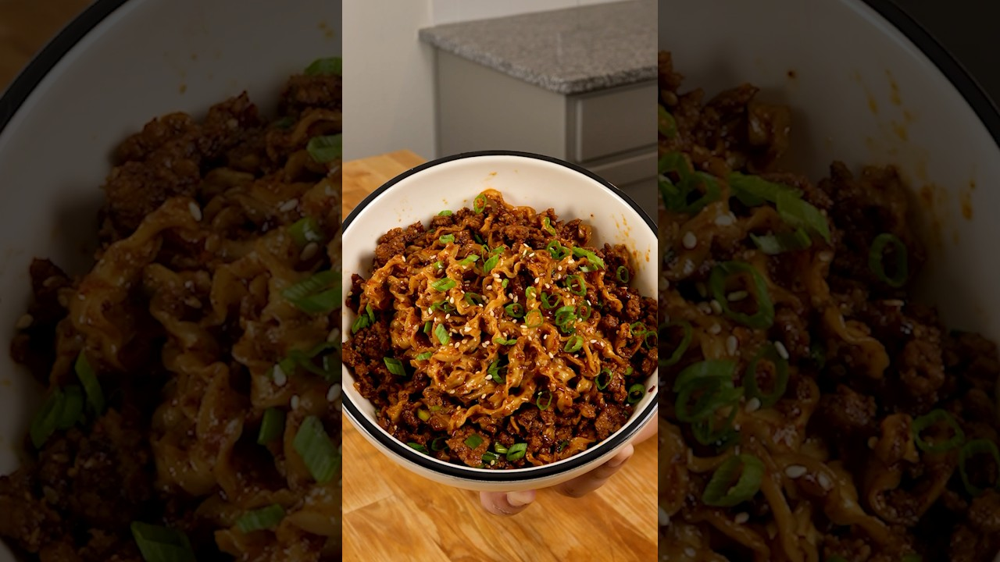

Ian Fujimoto's proposal-grade chili oil noodles with crispy pork. The ingredient list is his; the move is the classic one — smoking-hot oil poured straight over the aromatics. Title results not guaranteed.
Get the noodle water boiling. In a dry skillet, fry the ground pork over medium-high, breaking it up, then leaving it alone, until deeply browned and crispy. Set aside.
In a big heatproof bowl: chili flakes, garlic, ginger, green onion whites, and a big pinch of sesame seeds.
Heat the oil in the pork skillet until it just starts to smoke, then pour it over the bowl. It should hiss violently. Stir while it sizzles.
Stir the soy sauce, black vinegar, and sugar into the chili oil until the sugar dissolves. Taste. Adjust. This is the whole sauce.
Cook the noodles, drain, and drop them into the bowl with the crispy pork. Toss until every strand is lacquered red. Green onion tops and more sesame over. Serve to someone you'd marry.